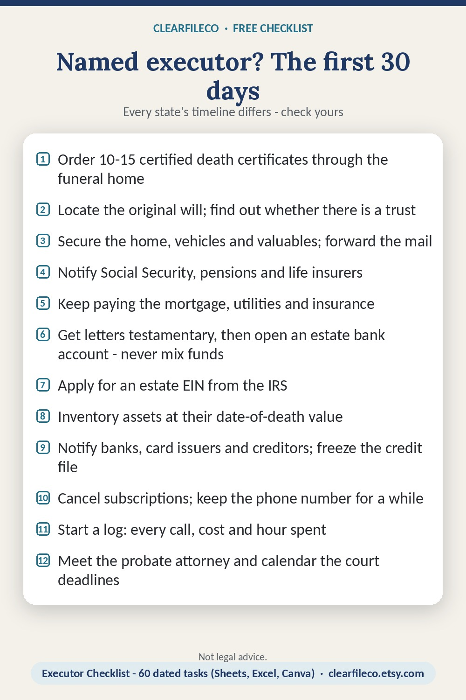

Named executor? The first 30 days
Every state's timeline differs - check yours
- Order 10-15 certified death certificates through the funeral home
- Locate the original will; find out whether there is a trust
- Secure the home, vehicles and valuables; forward the mail
- Notify Social Security, pensions and life insurers
- Keep paying the mortgage, utilities and insurance
- Get letters testamentary, then open an estate bank account - never mix funds
- Apply for an estate EIN from the IRS
- Inventory assets at their date-of-death value
- Notify banks, card issuers and creditors; freeze the credit file
- Cancel subscriptions; keep the phone number for a while
- Start a log: every call, cost and hour spent
- Meet the probate attorney and calendar the court deadlines
Instant download, $1.29 while the launch sale runs. Editable in Canva, Google Sheets/Docs/Slides, Excel, Word or PowerPoint depending on the product.

Save the image to Pinterest, or print the PDF - it is free.